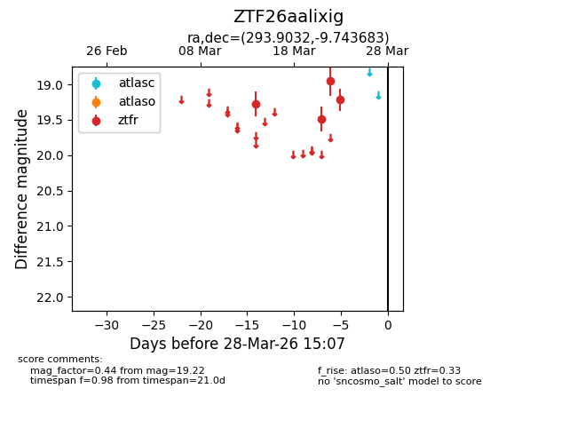
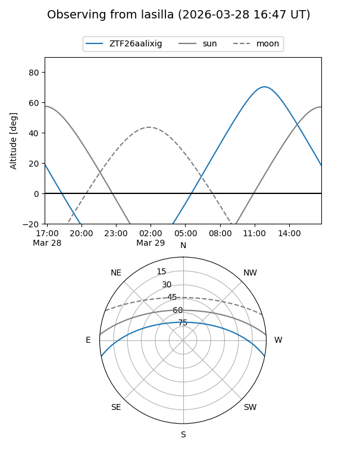
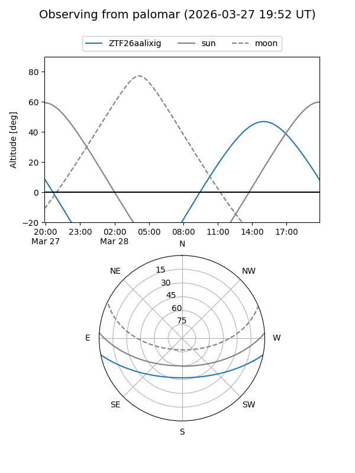

ZTF26aalixig
Target ZTF26aalixig at 2026-03-28 15:10
Aliases and brokers:
FINK: link
Lasair: link
ALeRCE: link
alt names
ZTF26aalixig (ztf,fink_ztf)
Coordinates:
equatorial (ra, dec) = 293.9032,-9.74368
equatorial (HMS+DMS) = 19:35:36.78,-09:44:37.26
galactic (l, b) = (29.1151,-14.19346)
Flags:
likely cv
Photometry:
last atlaso=nan, ztfr=19.22
1 atlaso, 4 ztfr detections
Lightcurve

Visibility


Additional plots